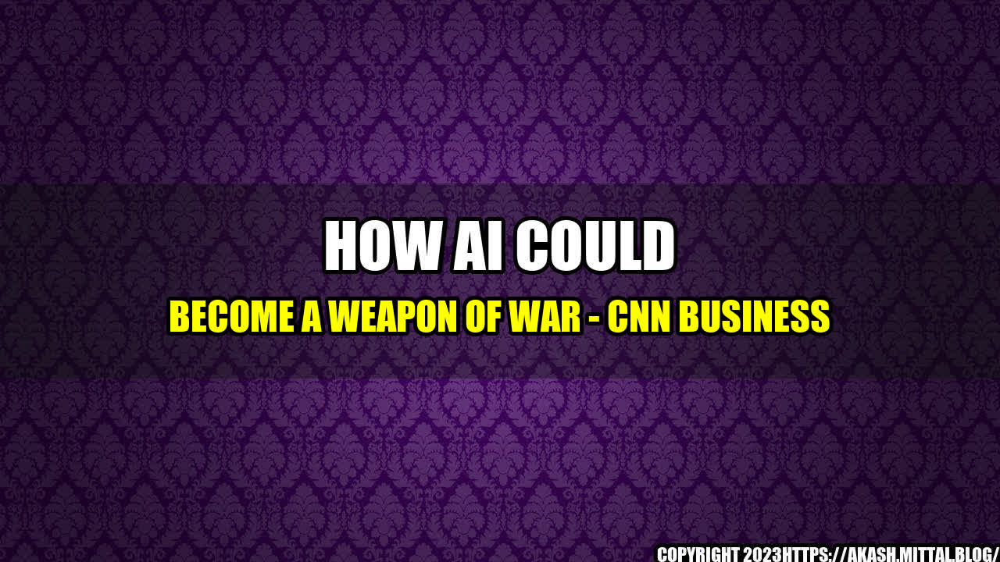

How AI Could Become a Weapon of War

It was the year 2015, and tensions were high between two neighboring countries. The threat of war was looming, and both sides were trying to gain the upper hand. One side decided to turn to artificial intelligence (AI) as a means of getting an advantage. They invested heavily in developing AI-powered weapons and defenses, hoping to be the first to gain the upper hand.

Fast forward to today, and it's not hard to imagine this scenario becoming a reality. As AI technology continues to advance, the potential uses for military purposes become more and more apparent. From drones equipped with machine learning algorithms to cyberattacks orchestrated by intelligent bots, the possibilities seem endless.
Quantifiable Examples
It's not just a far-fetched idea. AI is already playing a role in modern warfare. Here are some quantifiable examples:
- The US Air Force is using AI algorithms to help analyze data from surveillance drones, allowing them to identify potential threats more quickly and accurately.
- China has developed an autonomous drone that uses AI to track and kill targets.
- ISIS has been using AI-powered chatbots on social media to recruit new members and spread propaganda.
These examples are just the beginning. As AI technology improves, we can expect to see even more sophisticated uses of it in military applications.
The Potential Consequences
While the use of AI in warfare may have its benefits, it also raises many ethical and moral concerns. The consequences of using such technology could be severe:
- Increased civilian casualties: AI-powered weapons may not be able to distinguish between military and civilian targets, leading to more civilian deaths.
- Uncontrollable escalation: As AI-powered weapons become more autonomous, it could lead to a situation where they make decisions without human input, potentially leading to an uncontrollable escalation of conflict.
- Increased likelihood of war: The perceived strategic advantage that AI could bring may lead to an arms race, with countries competing to develop the most advanced AI-powered weapons.
These are just a few examples of the potential consequences of using AI in warfare. As technology continues to develop, it's essential that we consider the implications of its use in military applications.
Conclusion
- The use of AI in warfare has already begun, and it's likely to become even more prevalent in the future.
- The consequences of using such technology could be severe, including increased civilian casualties and uncontrollable escalation of conflict.
- It's essential that we consider the implications of AI's use in military applications and work to establish ethical guidelines for its development and use.
Curated by Team Akash.Mittal.Blog
Share on Twitter Share on LinkedIn